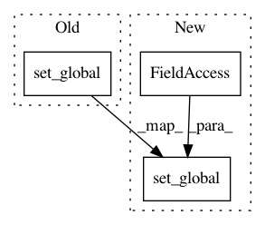

dbe4d86664d0452cd5377e7a54005a0f2e73eca1,wandb/sdk/wandb_init.py,_WandbInit,init,#_WandbInit#,308
Before Change
self._wl._global_run_stack.append(run)
self.run = run
self.backend = backend
module.set_global(
run=run,
config=run.config,
log=run.log,
join=run.join,
summary=run.summary,
save=run.save,
restore=run.restore,
use_artifact=run.use_artifact,
log_artifact=run.log_artifact,
)
self._reporter.set_context(run=run)
run._on_start()
return run
After Change
if s._noop:
run = RunDummy()
module.set_global(
run=run,
config=run.config,
log=run.log,
join=run.join,
finish=run.finish,
summary=run.summary,
save=run.save,
restore=run.restore,
use_artifact=run.use_artifact,
log_artifact=run.log_artifact,
)
return run
if s.reinit or (s._jupyter and s.reinit is not False):
if len(self._wl._global_run_stack) > 0:
In pattern: SUPERPATTERN
Frequency: 4
Non-data size: 3
Instances
Project Name: wandb/client
Commit Name: dbe4d86664d0452cd5377e7a54005a0f2e73eca1
Time: 2020-09-04
Author: jeff@wandb.com
File Name: wandb/sdk/wandb_init.py
Class Name: _WandbInit
Method Name: init
Project Name: wandb/client
Commit Name: 25539e909f8177d1629a61f3e91051c534b63bed
Time: 2020-11-06
Author: farizrahman4u@gmail.com
File Name: wandb/sdk_py27/wandb_init.py
Class Name: _WandbInit
Method Name: init
Project Name: wandb/client
Commit Name: dbe4d86664d0452cd5377e7a54005a0f2e73eca1
Time: 2020-09-04
Author: jeff@wandb.com
File Name: wandb/sdk_py27/wandb_init.py
Class Name: _WandbInit
Method Name: init
Project Name: wandb/client
Commit Name: 25539e909f8177d1629a61f3e91051c534b63bed
Time: 2020-11-06
Author: farizrahman4u@gmail.com
File Name: wandb/sdk/wandb_init.py
Class Name: _WandbInit
Method Name: init